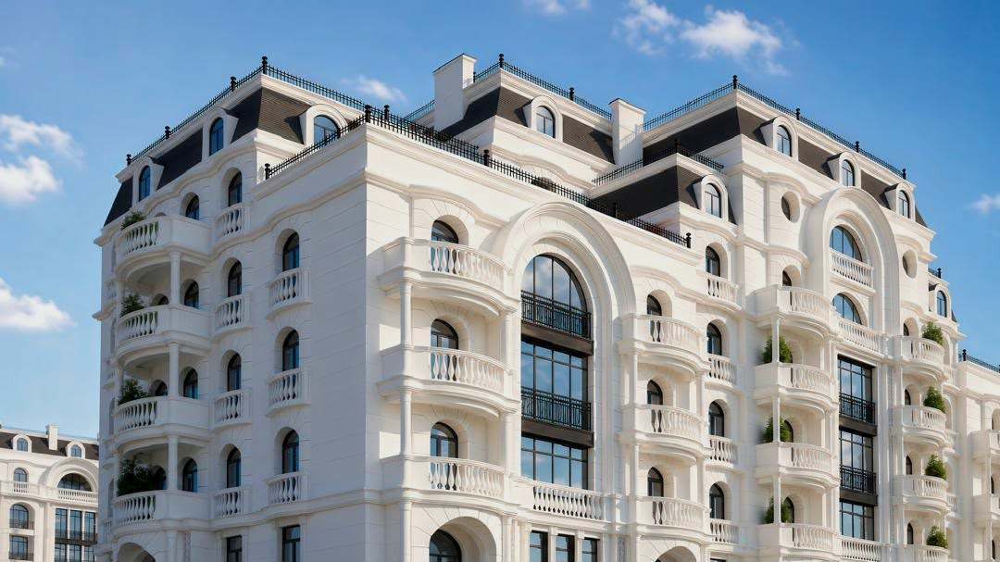
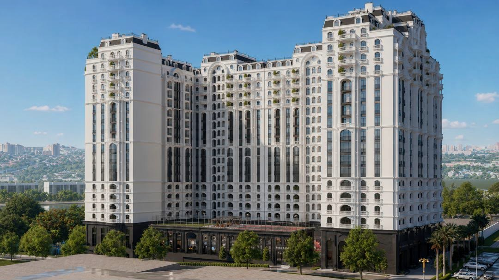
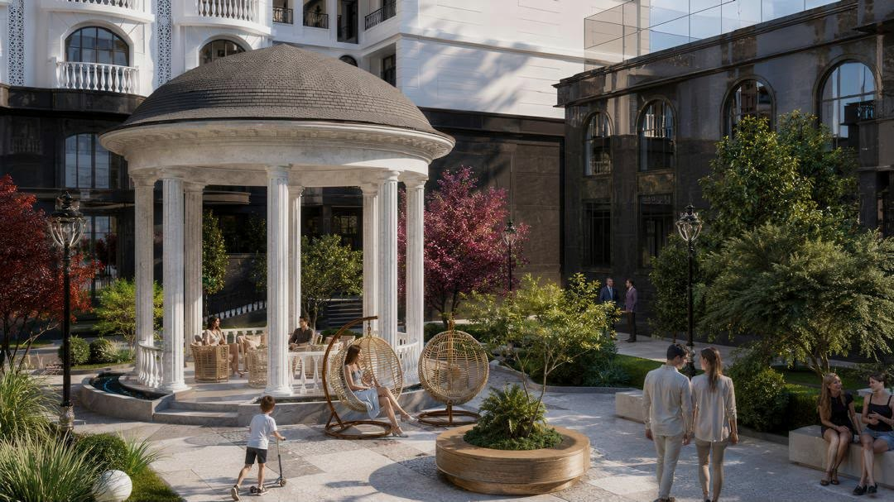
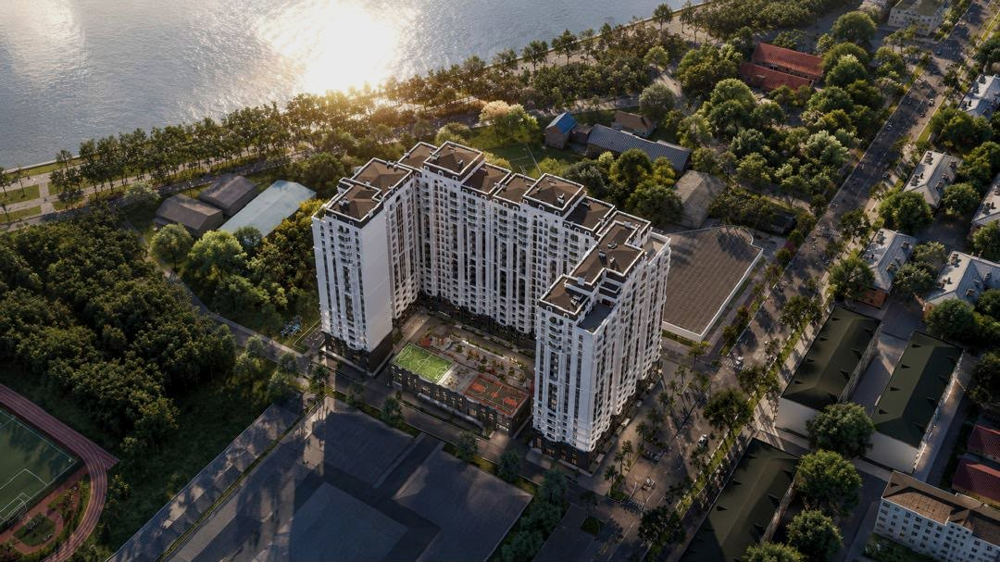
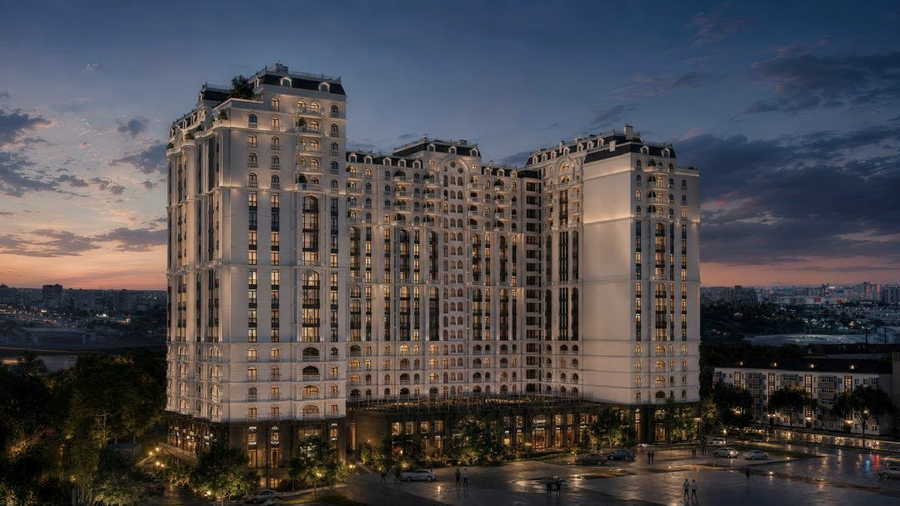

01
Светлый каменьи арочный ритм
Фасад держит линию улицы и не спорит с городом — он его продолжает.
Приватная архитектура на границе воды и зелени.

Светлый камень, арочный ритм и глубокие балконы. Фасад меняется вместе со светом: утром — графика теней, вечером — тёплое свечение витражей.


Вертикальные пилястры набирают тень к вечеру, карнизы подсвечены тёплой линией, а аркада первого этажа остаётся открытой городу — дом читается и в полдень, и в полночь.



Фасад держит линию улицы и не спорит с городом — он его продолжает.
Сады, вода и тень взрослых деревьев. Тишина начинается сразу за аркой.
Набережная и парк рядом, а транзит проходит стороной: слышно реку, а не проспект.
Резиденция собрана вокруг привычки возвращаться.
К реке, к тени двора, к городу,
который знаешь наизусть.
Панорамные окна верхних этажей выходят на Сырдарью: утренний свет приходит с воды, вечерний — с набережной. Внизу променад и кроны, выше — линия гор.
Вид с этажаНе схема, а реальная съёмка проекта. Выберите зону — она подсветится на кадре.

Худжанд компактен: отсюда до воды доходят пешком, а до всего остального доезжают за четверть часа. Рынок Панджшанбе и мечеть Шейха Муслихиддина, крепость с музеем, набережная и парк Камола Худжанди — всё в одном получасе, не считая пробок, которых в городе почти нет.
Высокие потолки, двухуровневые пентхаусы с индивидуальным доступом на лифте, лоты с балконами и открытыми террасами. Каждое планировочное решение — ода индивидуальности.
корпуса разной высоты,
девять секций
этажа в доминанте,
пентхаусы на верхнем
квартир — от студии
до двухуровневой
во дворе: парковка
уведена под землю
Резиденция — это не только квартира. Служба сервиса берёт на себя всё, что окружает жизнь в доме: от круглосуточного консьержа до управления арендой, — чтобы дом требовал внимания не больше, чем вам хочется ему уделить.
Все сервисы
Оставьте контакты — пришлём планировки, актуальные цены и приглашение в шоурум.
Выбрать квартиру